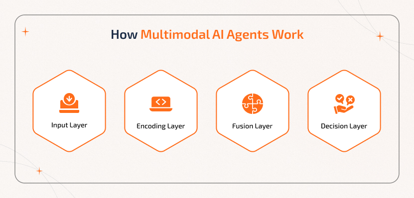
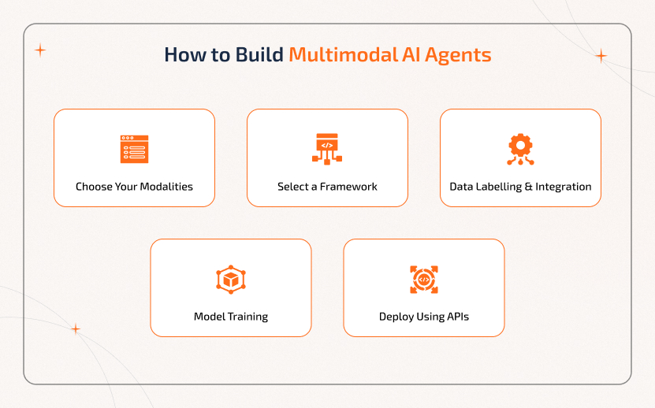
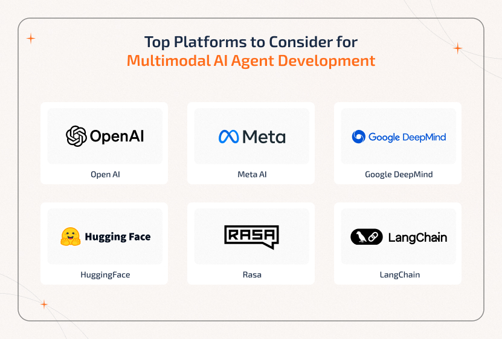

The advancement in Artificial Intelligence (AI) is drastic in one way or the other, and one of the most ground-breaking developments is the rise of Multimodal AI Agents. These are intelligent systems that use text, images, audio, etc., to deliver human-like understanding and responses. It is a game-changing option that any business can opt for if its goal is to build more efficient, intuitive, and context-aware AI solutions.
Here in this blog, you will get to know what multimodal AI agents are, where they add real value, how multimodal AI agents work, and why they are the future of AI-powered experiences in detail.
No matter if you are a developer, a startup founder, an enterprise leader, or a tech enthusiast, this section is all you need to understand what multimodal AI is, the potential of these agents and how to start building your own.
What is Multi Modal AI Agent
Multimodal AI agents are intelligent systems designed to add a new level of perception, decision-making, and interaction with digital environments.
In simpler terms, a multi modal AI agent is a shift from how AI traditionally operates. That is, traditional AI models often use a single type of data like text or image, whereas a multi modal AI agent can process multiple data types at the same time. These inputs are collectively referred to as modalities, and they include:
- Text (Natural language)
- Images (Visual recognition)
- Audio (Speech & sound)
- Video (Motion & action)
- Sensor data (GPS, temperature)
Multimodal AI agents combine all these inputs and interpret context with greater accuracy and depth. Imagine, instead of processing just what a person says, a multimodal AI agent can also read their facial expressions, detect tone of voice, and analyze the visual environment. This results in more intelligent and human-aware interactions.
For all these reasons, multimodal AI agents are becoming essential components in agentic AI development, where smart systems need to adapt, think, and make decisions on their own.
Why is Multimodal AI the Future of Agentic AI Development?
Agentic AI involves building smart systems that can think, make decisions, and take action on their own. Multimodal AI agents are a leap forward and enable AI systems to work with multi-input AI models such as text, images, and voice—thus allowing businesses to develop applications that interact with the real world just like humans.
Traditional single-modal agents fail to respond when the environment demands context beyond the trained input. In contrast, multimodal AI systems and multi-sensor AI agents offer better understanding, making them perfect for industries like healthcare, robotics, and autonomous vehicles.
Our AI agents use voice, text, and visuals to understand users better, just like real conversation
How Multimodal AI Agents Work
Multimodal AI agents use technologies covering Multi-Modal neural networks, sensor fusion algorithms, and multimodal machine learning techniques. The multimodal AI architecture figure includes:

1. Input Layer - Takes input from multiple sources like camera, microphone, sensors, etc.
2. Encoding Layer - Translates the input into embeddings.
3. Fusion Layer - Combines the features using neural fusion networks.
4. Decision Layer - Applies logic or reinforcement learning and generates actions.
Modern AI agents for multimodal search or interactions use robust multi-modal integration tools to maintain performance and consistency across all data types.
Multimodal AI Agents vs. Single-Modal AI – Know the Differences
The major difference between multimodal and single-modal AI agents is their scope of perception and reasoning.
Simply put, single-modal agents focus on one type of input and have limited flexibility. In contrast, multimodal agents in AI can evaluate multiple data types such as speech tone, facial expressions, textual sentiments, etc., simultaneously. Thus, they offer more accurate, context-rich decisions in healthcare, customer service, and finance.
Use Cases of Multimodal AI Agents
Often, multimodal AI applications showcase how combining different types of data brings smarter and more powerful results. Take a look at the multimodal AI agents examples:
- Healthcare diagnostic agents suggest diagnoses by combining patient speech, medical records, and imaging scans.
- Autonomous vehicles fusing radar, video, and LIDAR data for safe navigation.
- Retail AI agents offer personalized offers by interpreting customer facial expressions, voice tone, and purchase history.
- Educational tutors guide students in real-time by using voice, hand gestures, and written input.
How to Build Multimodal AI Agents
Building a multimodal AI agent involves combining software engineering with machine learning, data fusion, and agentic logic. The steps to get started in the construction of Multimodal AI agent is as follows:

Step 1: Choose Your Modalities
Decide what data types your agent is going to handle. For instance, text, audio, video, etc.
Step 2: Select a Framework
Use a multimodal AI framework like CLIP, ImageBind, or Flamingo.
Step 3: Data Labelling & Integration
Use multimodal integration tools and pre-process the input data.
Step 4: Model Training
Fine-tune or build a multimodal neural network.
Step 5: Deploy Using APIs
Use API for multimodal AI to deploy the agent on cloud platforms.
If you are looking to speed up the development process, partner with an AI agent development company to get custom solutions that align with your business needs.
Top Platforms to Consider for Multimodal AI Agent Development
Whether you're a developer or company owner, the following are platforms and tools you should look into for building multimodal AI agents:

OpenAI - CLIP and GPT-4o for multimodal reasoning
Meta AI - ImageBind
Google DeepMind - Flamingo
HuggingFace - Multimodal Transformers & datasets
Rasa & LangChain - For combining conversational agents with visual/audio intelligence
Developers can consider choosing open-source tools like HuggingFace Transformers for flexibility and fast prototyping.
Cost of Building & Implementing Multimodal AI Agents
So, how much does multimodal AI Development actually cost? This section answers that.
Just like understanding the technical considerations, getting to know the cost of implementation is vital.
The factors that influence the cost of multimodal agent development include:
- Complexity of the modalities
- Custom vs. off-the-shelf
- Data collection & labeling
- Development platform & tools
- Integration with existing systems
If you think the development is going off the budget, here are some possible ways to save costs:
- Start small with a pilot before scaling up.
- Choose open-source AI agent tools.
- Partner with an AI development company to obtain modular or reusable frameworks.
- Minimize upfront costs by combining single-modal AI with multimodal AI capabilities to create hybrid agents.
Optimize AI Development Without Breaking the Budget With Us
Challenges Associated with Building Multimodal AI Agents
Despite the potential advantages, building multimodal AI agents does come with its own challenges. These include, but are not limited to:
1. Aligning different data types is not just complex but also time-consuming.
2. These models require larger datasets and more computing power.
3. Since it involves using different modalities, contradictory signals can occur.
4. Real-time processing across inputs can eventually slow down performance.
5. It becomes difficult to understand the agent’s decisions with more data layers.
Overcoming these challenges is critical and requires solid data pipelines, robust models, and an experienced development team like Sparkout.
Why Choose Sparkout Tech as Your AI Agent Development Company
Whether you're starting to integrate AI from scratch or have a vision and want to bring it to life, Sparkout Tech is the trusted AI development company you need to reach. With experience in agentic AI development, the following are reasons to choose us:
- We possess the skills and expertise to build AI agent services.
- Access to a robust AI agent development platform.
- Experience with multi-sensor AI agents and multimodal data fusion.
- We offer deployment and scaling support across cloud-native environments.
- We also offer long-term support and custom solutions tailored to your domain.
We build smarter multimodal AI agents - faster, with the right tools and experts.
The Future of Multimodal AI Agents
Multimodal AI is transforming towards even more powerful applications. Here are the future trends in multimodal AI that lie ahead:
- Robots and devices will understand their environment through vision, sound, and movement.
- Simulations powered by real-time multimodal data for manufacturing, healthcare, etc.
- AR/VR integration that offers smarter, more responsive virtual experiences using multimodal cues.
- The rise of Emotional AI, enabling systems to detect emotions from facial expressions, language, and voice.
- Unified foundation models like GPT-4o that allow agents to reason across any modality.
Conclusion
Autonomous agentic ecosystems are the future of multimodal AI agents as they can interact with environments, people, and other agents. Hence, we can expect them to navigate physical spaces, communicate naturally, and make real-time decisions.
As businesses and developers look forward to innovating, investing in multimodal AI solutions will be a strategic advantage in thriving in a dynamic environment. The integration of multi-modal AI frameworks with agentic AI development principles will bring about general-purpose AI agents with real-world impacts.
Yokesh Sankar, COO at SparkoutTech